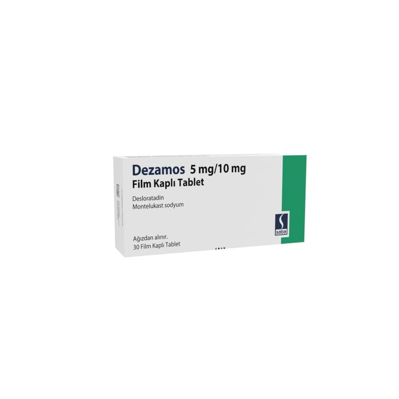

Dezamos 5 mg/10 mg Film Kaplı Tablet, 30 Adet

Ne için kullanılır
KT · Bölüm 1DEZAMOS 5 mg desloratadin 10 mg montelukast olarak iki farklı etken madde içeren yuvarlak, bikonvenks, her iki yüzü çentiksiz, bej renkli film kaplı tabletlerdir.
DEZAMOS 30 ve 90 film kaplı tablet içeren PA/Alu/PVC – Alüminyum folyo blister ambalajlarda piyasaya sunulmaktadır.
DEZAMOS, alerjik rinit (nezle) ve alerjik rinitle birlikte olan astım tedavisinde ve semptomlarının giderilmesi ve uzun süren sebebi bilinmeyen ürtiker (kurdeşen) (kronik idiyopatik ürtiker) belirtilerinin giderilmesi için reçetelenir.